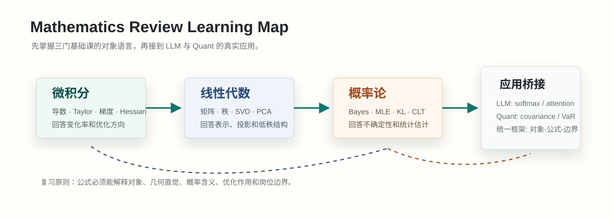

#012. 应用桥接：LLM 与 Quant 中的数学对象

#学习目标：把公式翻译成工程对象
前面 002-011 章分别讲了导数、链式法则、优化、矩阵、投影、特征值、概率、期望、统计推断、KL、Monte Carlo、随机过程和风险指标。本章不再引入很多新公式，而是训练一种面试中更重要的能力：看到一个工程名词时，能立刻说出它背后的数学对象、公式在读什么、它解决了什么问题、它有什么假设。
会翻译对象
把 logits 翻译成实数向量，把 attention 翻译成矩阵乘法，把组合风险翻译成二次型，把回测均值翻译成随机变量样本均值。
会读公式含义
不只背 \(\operatorname{softmax}\)、\(w^T\Sigma w\)、\(X^TX\hat\beta=X^Ty\)，还要能说清楚每个符号是什么、维度是什么、为什么这样写。
会连接场景
知道交叉熵为什么是语言模型训练目标，知道协方差为什么决定组合风险，知道 Monte Carlo 为什么既能做评测也能做回测模拟。
会识别边界
知道 softmax 概率不等于真实置信度，回测 Sharpe 不等于未来收益，低秩更新不是万能压缩，样本协方差在小样本下会很不稳定。
LLM 和 Quant 不是两套完全不同的数学。LLM 常把对象写成 token、向量、矩阵、分布和损失；Quant 常把对象写成收益、因子、权重、协方差和风险。底层仍然是前面章节的同一批工具：微积分负责“怎么变”，线性代数负责“对象如何组织”，概率统计负责“如何处理不确定性”。
#概念起点：一个对象的三种读法
零基础重新学时，最容易卡在“公式看见了，但不知道它在工程里指什么”。解决办法是每个对象都用三种读法过一遍：对象读法、维度读法、行为读法。
假设你看到一个向量 \(x=(1.2,-0.3,0.7)\)。只说“它是向量”没有意义，必须说它在场景里代表什么。
在 LLM 里，\(x\) 可能是某个 token 的 embedding。三个数不是三个独立标签，而是这个 token 在三个隐藏特征方向上的坐标。模型通过内积、矩阵乘法和非线性变换，把这些坐标逐层改写成上下文相关表示。
在 Quant 里，\(x\) 可能是一个股票对三个风险因子的暴露，例如市场、规模、价值。第一个数 1.2 可以读成“市场因子暴露较高”；第二个数 -0.3 可以读成“对规模因子方向是反向暴露”。
这两个场景的共同点是：向量把一个复杂对象拆成多个坐标方向。不同点是：LLM 的方向通常是训练中学出来的隐变量；Quant 的因子方向可能来自经济定义，也可能来自 PCA 等统计方法。
#从 002-011 到真实场景的总地图
下面这张表把前面章节的数学对象逐个接到 LLM 与 Quant。复习时不要把它当作术语表，而要按“对象是什么、解决什么问题、哪里会失效”来读。
| 前面章节 | 数学对象 | LLM 中的对应物 | Quant 中的对应物 | 要会说出的关键句 |
|---|---|---|---|---|
| 002 导数 | 局部变化率 | loss 对参数的梯度 | 目标函数对仓位的边际变化 | 导数回答“小改一点输入，输出怎么变”。 |
| 003 链式法则 | 复合函数求导 | 反向传播从 loss 传到每层权重 | 风险模型中参数变化传到组合指标 | 深层模型能训练，是因为链式法则把整体误差拆回局部。 |
| 004 优化 | 梯度、Hessian、约束 | AdamW、学习率、数值稳定 | 均值-方差优化、约束组合 | 优化不是只求极值，还要处理曲率、约束和噪声。 |
| 005 矩阵与秩 | 线性变换、子空间 | 线性层、projection、低秩适配 | 因子载荷矩阵、暴露矩阵 | 矩阵把一组坐标变成另一组坐标；秩表示有效自由度。 |
| 006 投影与最小二乘 | 把目标投到列空间 | 线性探针、表示回归、校准层 | 因子回归、alpha 去因子中性化 | 最小二乘是在所有线性解释里找残差平方最小的投影。 |
| 007 特征值、SVD、PCA | 主方向与低秩近似 | embedding 降维、LoRA、权重压缩 | 主成分风险因子、协方差降噪 | 主方向说明变化主要集中在哪里，低秩说明用少数方向近似整体。 |
| 008 条件概率 | 在已知信息下更新概率 | 下一个 token 条件分布 \(p(x_t\mid x_{| 给定市场状态后的收益分布 | 条件概率是“信息改变后概率怎么更新”。 | |
| 009 期望与方差 | 平均水平与波动 | 评测分数均值、采样输出波动 | 收益期望、波动率、Sharpe | 期望看中心，方差看不稳定性；只看均值会漏掉风险。 |
| 010 CE、KL、Monte Carlo | 分布差异与样本估计 | 交叉熵训练、KL 约束、采样评测 | 模拟收益路径、估计 VaR/CVaR | 无法解析计算的期望，常用样本平均近似。 |
| 011 随机过程与风险 | 时间中的随机性 | 自回归生成、RL rollout、MCMC | 价格路径、回撤、VaR/CVaR | 时间依赖决定“下一步分布”而不只是“单点分布”。 |
#LLM 对象一：logits、softmax、CE 与 KL
语言模型每一步都在做一个条件概率问题：给定前文 \(x_{ 公式里的 \(\exp\) 是指数函数。它的作用是把 logits 变成正数，并放大分数差异。分母 \(\sum_j\exp(z_j)\) 是归一化常数，保证所有 \(p_i\) 加起来等于 1。softmax 不关心 logits 的绝对平移：给所有 \(z_i\) 同时加同一个常数，概率不变。因此实际实现常用 \(z_i-\max_j z_j\) 来避免指数溢出。 词表只有三个 token：A、B、C。模型输出 logits \(z=(2,1,0)\)，真实下一个 token 是 A。求 softmax 概率和交叉熵。 先计算指数：\(\exp(2)\approx7.39\)，\(\exp(1)\approx2.72\)，\(\exp(0)=1\)。分母是 \(7.39+2.72+1=11.11\)。所以： 真实 token 是 A，交叉熵就是负的真实 token log 概率： 如果真实 token 是 C，loss 会变成 \(-\log 0.090\approx2.408\)。这说明交叉熵不是“对错 0/1”惩罚，而是按模型给真实答案的概率连续惩罚。 训练数据给出目标分布 \(q\)，模型给出分布 \(p_\theta\)。交叉熵 \(H(q,p_\theta)\) 可以拆成 \(H(q)+D_{KL}(q\|p_\theta)\)。当数据分布 \(q\) 固定时，\(H(q)\) 不能被模型改变，所以最小化交叉熵等价于让模型分布靠近数据分布。对于 one-hot 标签，\(q\) 只在真实 token 上为 1，于是 CE 退化成 \(-\log p_y\)。 Transformer 的很多核心操作都是线性代数。token 先变成 embedding 向量，再通过矩阵乘法得到 query、key、value。attention 用 query 和 key 的相似度决定“当前 token 应该看哪些历史 token”，再对 value 做加权平均。 为什么要除以 \(\sqrt{d_k}\)？如果 query 和 key 的每个坐标方差大致为 1，那么内积会把 \(d_k\) 个项加起来，方差随维度变大。分数太大时 softmax 会过度尖锐，梯度也容易不稳定。除以 \(\sqrt{d_k}\) 是一个尺度控制，让不同维度下的 attention score 更可训练。 假设句子有两个 token，attention 权重矩阵为： value 矩阵为： 求 attention 输出 \(AV\)，并解释含义。 第一行表示第一个 token 的新表示：它取 80% 的第一个 value，再取 20% 的第二个 value。第二行表示第二个 token 的新表示：它取 30% 的第一个 value，再取 70% 的第二个 value。attention 的本质不是神秘记忆机制，而是“由内容决定权重的加权平均”。 全量微调一个大矩阵 \(W\in\mathbb{R}^{m\times n}\) 需要改 \(mn\) 个参数。低秩更新把改变量限制成 \(BA\)，只需要 \(r(m+n)\) 个参数。当任务变化主要落在少数方向上时，低秩近似足够有效；当任务需要复杂的新能力时，过低的秩会成为瓶颈。 量化里经常把资产收益拆成“可解释的因子部分”和“不可解释的残差部分”。这正是线性回归和最小二乘的语言。设 \(r\) 是某只股票一段时间的收益向量，\(X\) 是同一段时间的因子收益矩阵，\(\beta\) 是这只股票对各因子的暴露： 这里 \(r\in\mathbb{R}^{T}\)，\(X\in\mathbb{R}^{T\times k}\)，\(\beta\in\mathbb{R}^{k}\)，\(\epsilon\in\mathbb{R}^{T}\)。\(T\) 是样本期数，\(k\) 是因子个数。最小二乘选择让残差平方和最小的 \(\beta\)： 如果 \(X^TX\) 可逆，一阶条件给出正规方程： 假设只有一个市场因子。三天市场收益是 \(x=(1,2,3)\)，某股票收益是 \(r=(2,4,5)\)。不考虑截距，用模型 \(r_t=\beta x_t+\epsilon_t\) 估计 \(\beta\)。 一维最小二乘公式是： 代入数据： 解释是：在这个极简样本里，市场因子每变化 1 个单位，股票收益平均变化约 1.786 个单位。残差代表市场因子解释不了的部分，可能是行业、风格、个股事件或噪声。 组合不是单个资产收益的简单相加，因为资产之间会一起涨跌。协方差矩阵 \(\Sigma\) 记录资产收益之间的联动。设权重向量为 \(w\)，资产收益向量为 \(R\)，组合收益是 \(R_p=w^TR\)。组合方差是： 这行公式读法很重要：\(w^T\Sigma w\) 是一个标量。中间的 \(\Sigma\) 告诉我们资产如何共同波动，左右的 \(w\) 告诉我们每个资产在组合里占多少。只看单个资产波动率是不够的，因为两个高波动资产如果负相关，组合风险可能被抵消；两个低波动资产如果高度正相关，组合风险可能集中。 两个资产权重 \(w=(0.6,0.4)\)，协方差矩阵为： 求组合方差。 先算 \(\Sigma w\)： 再左乘 \(w^T\)： 所以组合方差是 0.0336，组合波动率是 \(\sqrt{0.0336}\approx0.183\)。如果只把两个资产波动率按权重平均，会忽略协方差项，风险判断会偏。 Monte Carlo 在 Quant 里常用于“无法解析算出风险”的情况。比如未来 10 天组合损失 \(L\) 的分布很复杂，可以模拟很多条收益路径，得到 \(L_1,\ldots,L_n\)，再用样本分位数估计 VaR，用尾部平均估计 CVaR。 设词表只有四个 token：A、B、C、D。某一步模型输出 logits \(z=(3,1,0,-1)\)，训练标签是 B。推理时我们还想比较 temperature 对采样分布的影响。请完成：softmax 概率、训练 loss、温度 \(T=2\) 后的概率变化，并解释这条链路连接了哪些数学对象。 第一步，做稳定 softmax。为了避免指数过大，可以先减去最大 logit 3，得到 \(z'=(0,-2,-3,-4)\)。softmax 概率不变，因为所有 logit 同时减同一个常数。 分母约为 \(1+0.135+0.050+0.018=1.203\)。所以： 第二步，训练标签是 B，所以交叉熵 loss 是： 这个 loss 偏大，因为模型把最高概率给了 A，而真实标签是 B。反向传播时，梯度会推动 B 的 logit 上升，推动其他 token 的 logit 相对下降。这里连接的是 003 的链式法则和 004 的优化。 第三步，推理采样时加 temperature。常见做法是先把 logits 除以 \(T\)，再 softmax： 当 \(T=2\)，logits 变成 \((1.5,0.5,0,-0.5)\)。减去最大值后是 \((0,-1,-1.5,-2)\)，指数约为 \((1,0.368,0.223,0.135)\)，分母约为 1.726，于是： 和原来的 \((0.831,0.112,0.042,0.015)\) 相比，温度变大让分布更平，低概率 token 更容易被采到。温度不是改变模型知识，而是改变从模型分布中取样的随机性。 第四步，把数学对象串起来：logits 是向量；softmax 是从向量到概率分布的函数；交叉熵是负对数似然；梯度来自链式法则；采样输出是随机变量；多次采样评测平均分时，就进入 Monte Carlo 估计。 很多 LLM 面试题表面问“temperature、top-p、KL、CE”，本质都在问你是否理解“模型分布”和“采样过程”是两件事。训练通过 CE/KL 改变模型分布；推理参数通常不改模型参数，只改变如何从分布里抽样。 有两个资产。日收益预测均值为 \(\mu=(0.001,0.0005)\)，权重为 \(w=(0.6,0.4)\)，协方差矩阵为： 假设一天组合收益近似正态。请计算组合期望、组合波动率、95% 一日 VaR 的近似值，并说明如果用 Monte Carlo 应该怎么做。 第一步，组合期望是权重和预测均值的内积： 这表示预测的一日组合收益约为 0.08%。注意它是期望，不是保证收益。 第二步，组合方差是二次型： 组合日波动率约为 1.83%。这比期望 0.08% 大很多，说明短期收益主要被噪声和风险主导。 第三步，若收益 \(R_p\) 近似正态，损失可以写成 \(L=-R_p\)。95% VaR 大约是损失分布的 95% 分位数。标准正态 95% 分位数约为 1.645，因此： 含义是：在正态近似和参数可信的前提下，一日损失超过 2.93% 的概率约为 5%。这不是最大亏损，只是一个分位数门槛。 第四步，如果用 Monte Carlo，可以重复模拟很多次二维收益 \(R^{(i)}\)，每次计算组合损失 \(L_i=-w^TR^{(i)}\)。把 \(L_i\) 从小到大排序，第 95% 位置近似 VaR；超过 VaR 的那些损失取平均，近似 CVaR。 这个流程连接了 006 的最小二乘信号、007 的协方差结构、009 的期望方差、010 的 Monte Carlo、011 的 VaR/CVaR。实际回测还必须加入交易成本、滑点、约束、换手、容量和样本外验证。 组合问题最容易犯的错误是只看预测收益 \(\mu\)。真正的组合决策至少同时看三件事：收益预测是否可靠、协方差估计是否稳定、约束和交易成本是否会吞掉收益。数学上看，就是线性收益项 \(w^T\mu\) 和二次风险项 \(w^T\Sigma w\) 的权衡。 被问到 CE、KL、attention、embedding、LoRA 时，先说数学对象和维度，再说它在训练或推理链路中的作用，最后补充数值稳定和局限。 被问到因子、协方差、组合优化、VaR、回测时，先说随机变量和矩阵结构，再说估计误差、非平稳、成本和样本外。 所有应用题都先做维度检查：向量乘矩阵是否可乘，结果是标量还是分布，样本平均是在估计什么期望。 对象是什么，公式怎么读，解决什么问题，依赖什么假设，真实系统里哪里会失效。这个顺序比直接背定义更稳。面试追问 合格回答 容易漏掉的边界 为什么不用 MSE 训练下一个 token？ 下一个 token 是离散类别，交叉熵直接对应分类似然；MSE 更适合连续数值回归。 如果比较的是 logits 蒸馏，MSE 可能作为辅助损失，但不是标准语言建模目标。 softmax 概率是不是置信度？ 它是模型归一化后的预测分布，可用于排序和采样。 它不保证校准；高概率可能来自训练偏差、分布外输入或过度自信。 KL 为什么有方向？ \(D_{KL}(q\|p)\) 是用 \(p\) 近似 \(q\) 的代价，交换方向会改变惩罚形状。 前向 KL 更重视覆盖目标分布的高概率区域，反向 KL 更容易 mode-seeking。 #LLM 对象二：attention、embedding 与低秩更新
#Quant 对象一：最小二乘、因子模型与暴露
Quant 术语 数学语言 面试中要补充的解释 因子暴露 回归系数 \(\beta\) 资产对某个共同风险方向的敏感度，不等于未来收益保证。 alpha 模型未解释的期望收益或预测信号 必须扣成本、做样本外验证，并检查是否只是风险暴露。 残差 \(\epsilon=r-X\hat\beta\) 残差不是“纯 alpha”，也可能包含遗漏因子和噪声。 因子中性 约束组合暴露接近 0 中性化降低某些共同风险，但也可能削弱收益来源。 #Quant 对象二：协方差、组合风险与 Monte Carlo
#完整案例一：LLM 训练与采样
#完整案例二：Quant 组合与风险
#常见误区、面试连接与检查清单
常见误区 为什么错 应该怎么说 softmax 最大的 token 就是模型“一定认为正确”。 softmax 是归一化分布，不保证校准，也不代表真实世界概率。 它是模型条件分布下的最高概率候选，仍受数据、模型和采样策略影响。 attention 权重就是完整解释性。 attention 权重只显示 value 加权比例，后续层、残差、MLP 仍会改写表示。 它提供局部线索，但不能单独证明因果解释。 embedding 距离近就一定语义相同。 embedding 空间由训练目标塑造，距离可能混入频率、格式、任务偏差。 相似度要结合任务、归一化方式和评估集验证。 低秩更新一定不损失能力。 低秩限制了更新子空间，任务复杂时可能欠拟合。 低秩是参数效率和表达能力之间的折中。 回归系数就是因果影响。 最小二乘只描述相关结构，遗漏变量、内生性和非平稳都会误导。 因子暴露是统计解释，不自动等于因果关系。 历史协方差就是未来风险。 市场相关性会变，危机时相关性常上升，小样本估计也噪声大。 协方差估计需要滚动、收缩、压力测试和样本外检查。 回测 Sharpe 高就说明策略好。 可能来自过拟合、幸存者偏差、未来函数、多重检验或忽略成本。 要看样本外、成本后、容量约束、回撤和稳健性。 LLM 面试连接
Quant 面试连接
共同底层能力
回答顺序